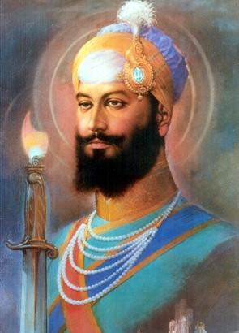

The foundation stone of 12 feet high Akal Bunga (Sri Akal Takhat Sahib) was laid by Sri Guru Hargobind Sahib Ji himself in front of the harimandir Sahib The five story building was completed in 1609
The Akal Takhat was carefully constructed by Baba Buddha Ji and Bhai Gurdas Ji. No mason was employed as per Guru’s instructions that no labour would be acquired for its construction.
9 July brings together four moments of Sikh history, from 1609 to 1975. The main event of the day is from 1609: The foundation stone of 12 feet high Akal Bunga (Sri Akal Takhat Sahib) was laid by Sri Guru Hargobind Sahib Ji himself in front of the harimandir Sahib The five story building was completed in 1609. Together they span four periods, from Miri-Piri and the middle Gurus (1606–1674) to From the Anandpur Sahib Resolution to 1984 (1967–1984). People, places and movements connected with this day include Guru Hargobind Sahib Ji, Baba Buddha Ji, Bhai Gurdas Ji and Bhai Maharaj Singh.

Also on this day
- 1850Bhai Maharaj Singh arrived in Singapore aboard the Mahomed Shaw, accompanied by his disciple, Khurruck Singh, and moved to Outram Jail
- 1922Kishan Singh Gargaj considers merger of both the Chakarvarti Jathas He alongwith Assa Singh, reaches Hayatpur to meet Karam Singh.
- 1975Akali Dal initiated their protest against the emergency imposed by Indira Gandhi and launched an agitation
Historical background
Miri-Piri and the middle Gurus (1606–1674)
After the martyrdom of Guru Arjan Dev Ji in 1606, Guru Hargobind Sahib Ji wore two swords of miri and piri (temporal and spiritual authority), established the Akal Takht and fought several engagements with Mughal forces. The seventh and eighth Gurus, Guru Har Rai Ji and Guru Har Krishan Ji, led the community from Kiratpur and Delhi, and Guru Tegh Bahadur Ji founded Anandpur (Chak Nanaki) in 1665.
On this day in this period: 1609 The foundation stone of 12 feet high Akal Bunga (Sri Akal Takhat Sahib) was laid by Sri….
Colonial Punjab and the Singh Sabha revival (1850–1919)
Under British rule Sikhs were recruited in large numbers into the army while new reform movements arose: the Namdhari (Kuka) movement, the Singh Sabha movement founded at Amritsar in 1873, the Chief Khalsa Diwan (1902), Khalsa College and the Anand Marriage Act (1909). The period ended with the Ghadar movement, the Komagata Maru episode (1914) and the Jallianwala Bagh massacre of 13 April 1919.
On this day in this period: 1850 Bhai Maharaj Singh arrived in Singapore aboard the Mahomed Shaw, accompanied by his….
The Gurdwara Reform (Akali) movement (1920–1925)
Sikhs organised the Shiromani Gurdwara Parbandhak Committee (November 1920) and the Shiromani Akali Dal (December 1920) to free historic gurdwaras from hereditary mahants backed by the government. Through non-violent morchas, including Nankana Sahib (1921), the keys agitation (1921–22), Guru ka Bagh (1922) and Jaito (1923–25), and alongside the militant Babbar Akali movement, the campaign led to the Sikh Gurdwaras Act of 1925.
On this day in this period: 1922 Kishan Singh Gargaj considers merger of both the Chakarvarti Jathas.
From the Anandpur Sahib Resolution to 1984 (1967–1984)
The Akali Dal adopted the Anandpur Sahib Resolution in 1973 and launched the Dharam Yudh Morcha in 1982 over river waters, Chandigarh and greater state autonomy. Tensions culminated in Operation Blue Star, the Indian Army's assault on the Darbar Sahib complex in June 1984, the assassination of Prime Minister Indira Gandhi on 31 October 1984 and the anti-Sikh violence in Delhi and elsewhere that followed.
On this day in this period: 1975 Akali Dal initiated their protest against the emergency imposed by Indira Gandhi and….
People and places of this day
Guru Hargobind Sahib Ji
The sixth Guru (1595–1644), who wore the swords of miri and piri, built the Akal Takht in 1606, was held in Gwalior Fort and released with 52 rajas (remembered as Bandi Chhor Diwas), and fought several battles with Mughal forces before settling at Kiratpur.
Read more → · Mentioned on 20 other days of the year
Baba Buddha Ji
A disciple of Guru Nanak Dev Ji who lived through the time of six Gurus (c. 1506–1631). He performed the tilak ceremony for the second to sixth Gurus and was the first granthi of Sri Harmandir Sahib.
Read more → · Mentioned on 9 other days of the year
Bhai Gurdas Ji
A scholar and poet (c. 1551–1636), a relative of Guru Amar Das Ji, who acted as scribe when Guru Arjan Dev Ji compiled the Adi Granth. His Vaaran are called the key to the Guru Granth Sahib.
Bhai Maharaj Singh
A Sikh saint-soldier who led resistance to British rule after the Anglo-Sikh wars. Captured in 1849, he was deported to Singapore in 1850 and died in prison there in 1856.
Mentioned on 5 other days of the year
The Akali movement and its morchas
The Gurdwara Reform movement of 1920–1925, in which jathas of Akali volunteers non-violently took control of historic gurdwaras from mahants. Its campaigns included the keys morcha, Guru ka Bagh and Jaito; tens of thousands were arrested and hundreds killed or injured before the Sikh Gurdwaras Act of 1925. The Shiromani Akali Dal has remained the main Sikh political party.
Mentioned on 113 other days of the year
The Babbar Akalis
A militant group of 1921–1925 in the Doaba region, led by figures such as Kishan Singh Gargaj, who rejected the Akalis' non-violence and targeted officials and informers. Several of its leaders were hanged in 1926; the SGPC disowned its methods in 1923.
Mentioned on 63 other days of the year
Operation Blue Star and November 1984
In June 1984 the Indian Army attacked the Darbar Sahib complex in Amritsar and some forty other gurdwaras to remove armed militants led by Sant Jarnail Singh Bhindranwale; many pilgrims were killed and the Akal Takht was heavily damaged. Prime Minister Indira Gandhi was assassinated by her Sikh bodyguards on 31 October 1984, and thousands of Sikhs were killed in the violence that followed in Delhi and other cities.
Mentioned on 10 other days of the year
Related days in Sikh history
Sources and further reading
- Event list: the Sikh calendar of historical dates published by AllAboutSikhs.com (Gateway to Sikhism).
- Teja Singh and Ganda Singh, A Short History of the Sikhs, vol. 1 (1469–1765), Orient Longmans, 1950.
- N. Gerald Barrier, The Sikhs and their Literature, Manohar, 1970; Harjot Oberoi, The Construction of Religious Boundaries, Oxford University Press, 1994.
- Mohinder Singh, The Akali Movement, Macmillan, 1978; Teja Singh, The Gurdwara Reform Movement and the Sikh Awakening, 1922.
- Mark Tully and Satish Jacob, Amritsar: Mrs Gandhi's Last Battle, Jonathan Cape, 1985; Harjinder Singh Dilgeer, The Akal Takht, Sikh University Press, 1980.
- Harbans Singh (ed.), The Encyclopaedia of Sikhism, 4 vols, Punjabi University, Patiala, 1992–1998.
- Khushwant Singh, A History of the Sikhs, 2 vols, Oxford University Press, 1963–1966 (2nd ed. 2004).
- J. S. Grewal, The Sikhs of the Punjab, The New Cambridge History of India, Cambridge University Press, 1990 (rev. 1998).
Background sections are written by SikhsInIndia.com from the works listed. Dates in Sikh history sometimes differ between sources and between the Nanakshahi and older Bikrami calendars. To suggest a correction, write to sikhsinindia@gmail.com.